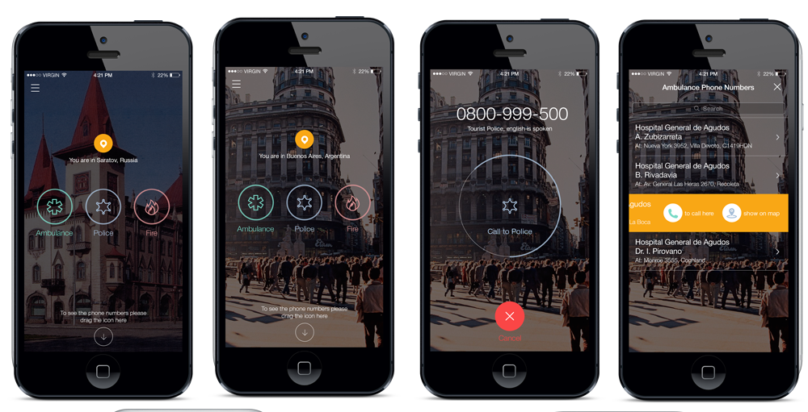
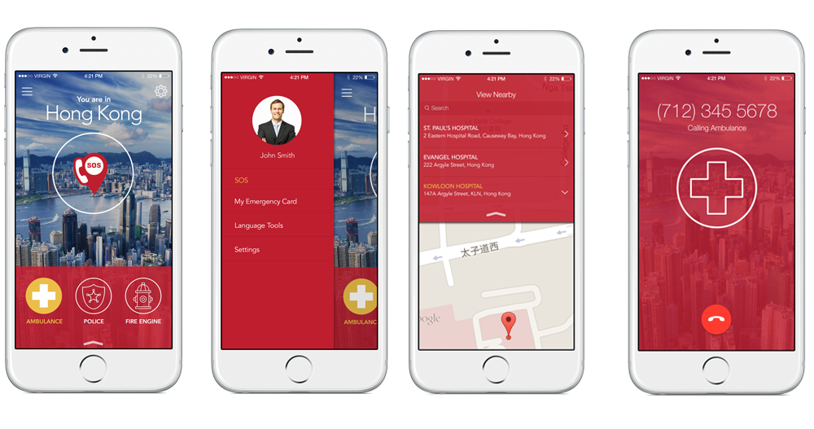

SOS
Role: UX/UI Designer
Skills: Photoshop, Illustrator & Balsamiq
Roko Labs is an application development company, dealing with development of apps for other companies on both PCs and mobile platforms including android and iOS. While working at Roko Labs as a UX/UI Designer, I worked on a project called SOS. SOS is a mobile application available for android and iOS mobile platforms. The application allows a user to make emergency calls while travelling in countries with a different languages and emergency numbers.
Essential Job Duties:
- Defining the requirements of the SOS mobile application according to the gathered requirements and user experience designed.
- Conceptualizing user interfaces and user experience for SOS mobile application.
- Providing the developing team with optimized Photoshop Documents (PSDs) for the SOS mobile application User Interface design.
- Analysing and documenting the application development procedures and processes for SOS project.
- Performing analysis and split testing for the mobile application.